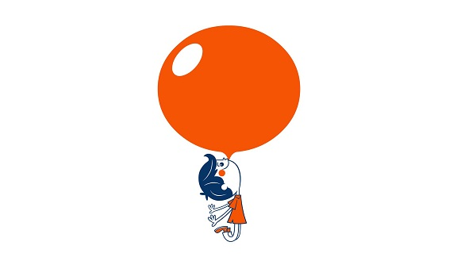

多么好的幻想
我总是喜欢想的很多，很多不切实际的，很多离我很遥远的。有人美其名曰：梦想、规划。 我个人觉得我的算不上，很多时候更多觉得是在打发自己的大脑，让自己胡思乱想能够放松一下。
或许你很奇怪，胡思乱想怎么就能够放松了。也许是我自己比较奇怪的，我是个不善于去表达自己情感的人，对于我来说，藏在心里比表现在脸上要舒服多了，因为那样一点也不会难堪或者尴尬之类的。因为只有我一个人知道，所以无论是什么，都没有人会去计较，因为他们根本就不知道。
久而久之，有的感情在心里埋的太久，有些压抑了，我就尝试着用其他的办法让头脑能够活跃一些。我每天在中午的时候都会去操场散步，通过散步，我让自己的想法随着一步一步的让它自己在大脑中疯狂的跳动，而我只负责看着它自己不论歇斯底里还是心如净水，反正我不表现出来，反正至少我看上去很平静，但是实际上，大脑它知道我。
在睡前的时候，我的大脑就更活跃了，闭着眼睛它简直开心极了，一遍一遍的向我推销着过去的回忆，给我观看今天事情的锦集，既然都闭上了眼睛，那我就只能任它操控啦。不过最大的好处就是闭上眼睛、蒙上被子、看着锦集，开不开心，难不难过，我脸上的表情是怎么样的都没人看到啦。
日子一天天都在过去，对于时间我真是一点办法都没有 ，可我的大脑有，它总是会在任何时候、任何地点，想着它自己想着的事情，真的很矛盾吧，但可惜事情就是这样的。它想着自己想着的事情，然后记下这些事情，这样子就算时间是过去了，但它好歹留下了想法吧，也可以说是对于时间的总结，那不也挺棒的吗，我的大脑，看来你还挺能干的。
我挺讨厌它很多时候都会喜欢怀念和后悔，一边回想着以前经历的事情，一边后悔自己以前做的那些错事，有的时候想着想着，就让我特别想打自己，我讨厌它让我想起我不想想起的事情，但它可不管，它都习惯了想来想去的，一点都不累吗，我真是佩服它的激情。但是我还是很讨厌那种感觉，让我很多时候都会自己真的很差，这里做的不好，那里做的不行。那能怎么办呢，努力做好呗，能让它少挑我的毛病我就心满意足了。
它总是会让我紧张，尤其是对于感情的事情，我总是处理不好感情的问题。它让我觉得我不害怕孤独，但是同时我也不想要一种孤独。有的时候我只想要简单的感情的时候，它会提醒我要的更多，到最后却什么都没有得到。而且我也没有去认识异性的勇气，它总是让我感觉我缺少着什么，总是提醒我现阶段的我不够好，现阶段的我还没有遇到对的人，它告诉我，我最喜欢的就是简单和自然。
它有时让我开心，它总是有着稀奇古怪但很有趣的想法，它能够通过看着一样东西，就能联想到不一样的事情，不得不说想象力太丰富了。有些想法真的很有趣，至少我是这么认为的，可不是恭维它，它这些想法让我感觉到不一样的东西，让我能够感觉到很愉悦。我真是个怪人，所以它也给我怪想法来让我开心，有时它还是蛮体贴的。毕竟在我真的难过的时候，它会同我一起想着那些难过的事情然后让那些事情继续伤害现在的我。
那么它到底让我得到了什么呢？ 最多的就是让我习惯和它去沟通和交流吧，我和它慢慢的能够达成共识，我们在面对事情的时候都会冷静下来然后去想怎么解决。当然了，有时候它胜一筹或者我胜一筹，也有时候我冲动了或者它没考虑到。总是会存在各种各样的意外，但是我们越来越能朝着一件事情去进行到底了，我也越来越能够克制自己，而它，也慢慢的会让我在合适的时候想着合时宜的事情了。总之，我感觉我们都在进步。
最后吧，我想用一句歌词进行结尾： 无论相遇还是不相遇，都是献给命运的序曲。